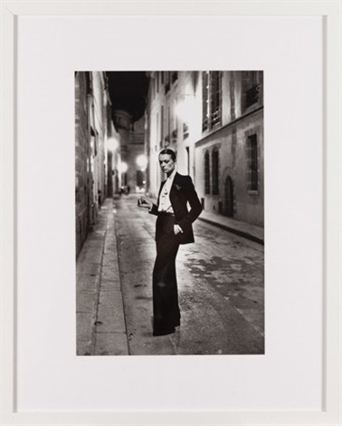
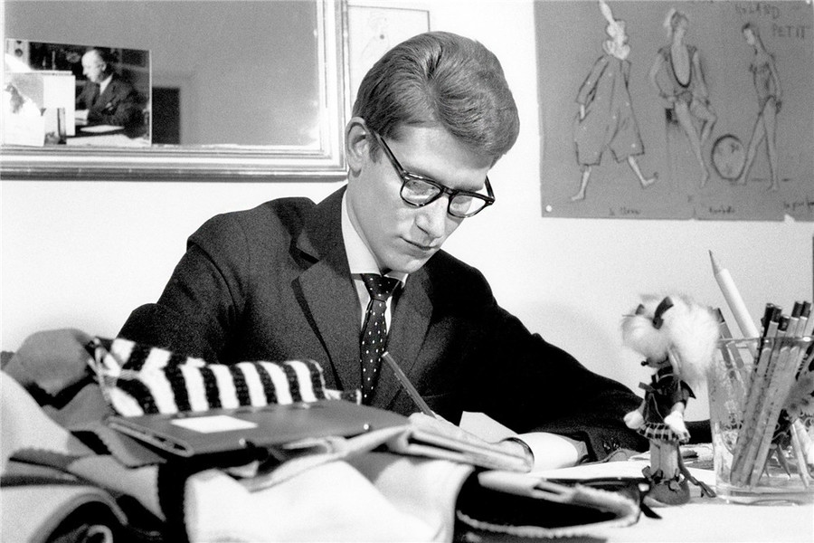
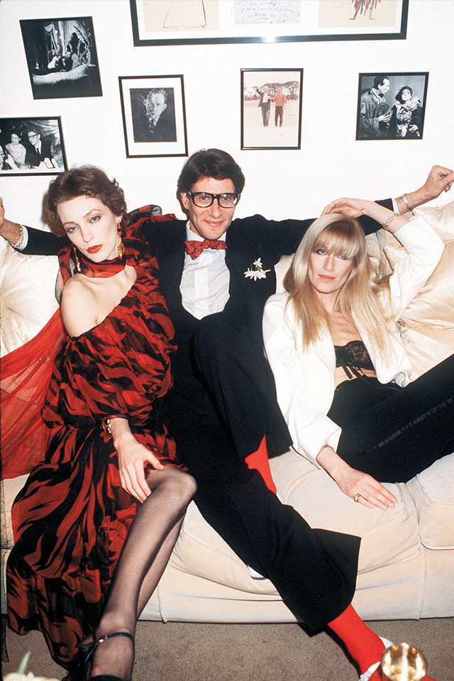
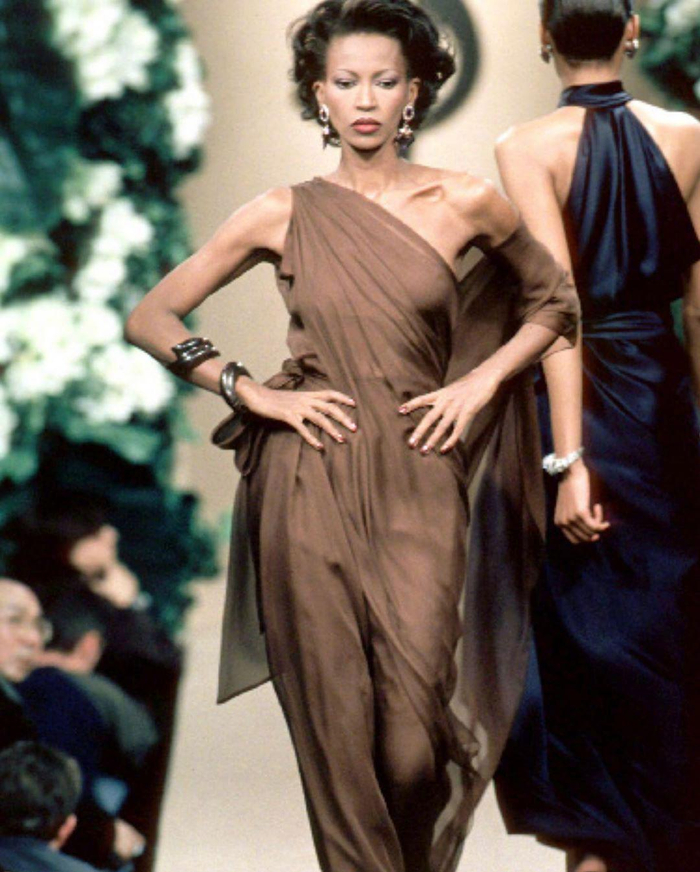
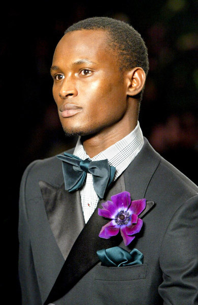
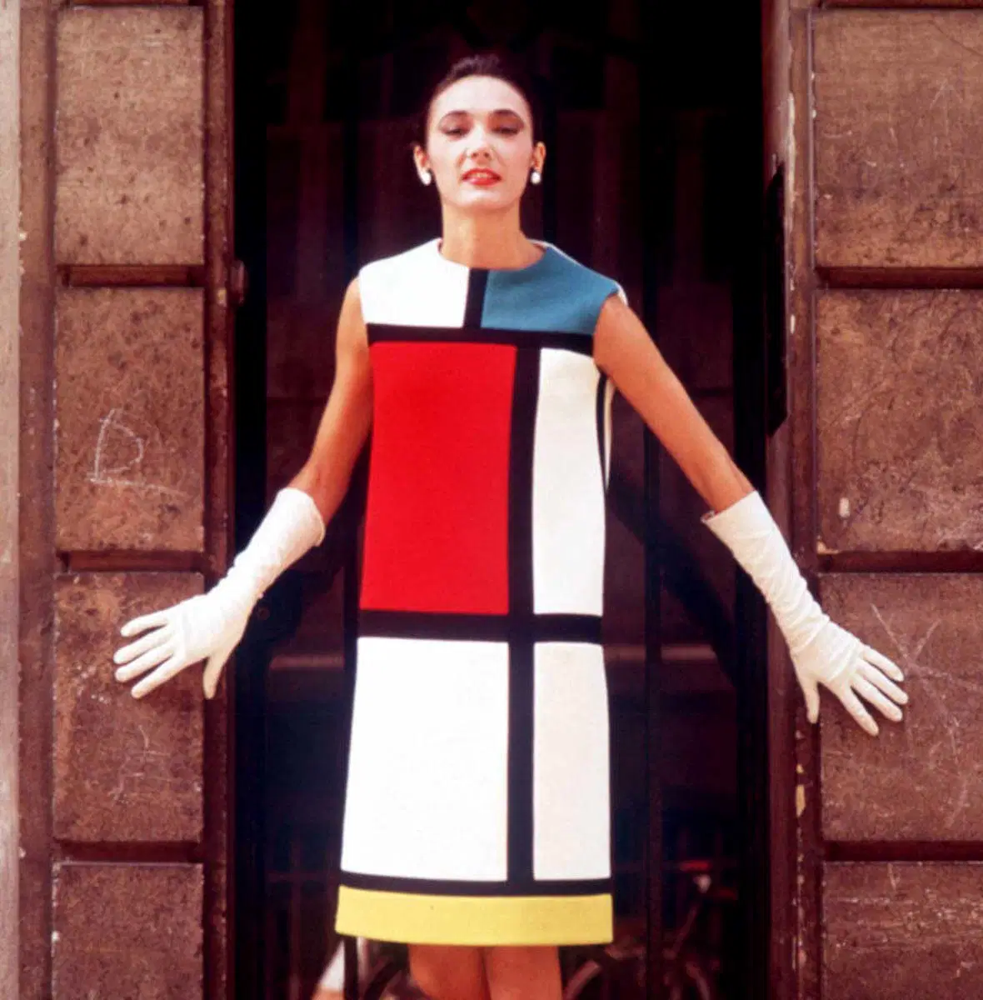
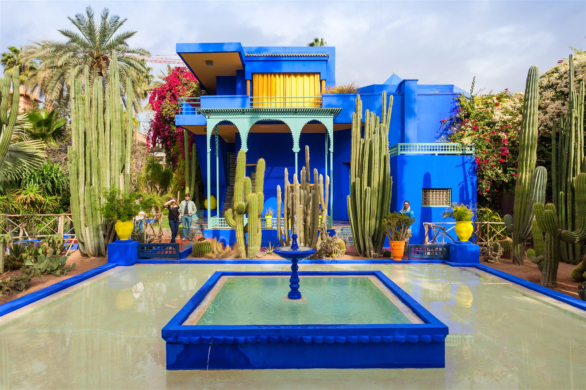

Le Smoking 1966 首创 · 第一件女性燕尾服
把高定裁缝的纪律感交给女人——裤装从此是晚礼服。
1975年，巴黎夜里的奥布里街。
一个女人穿着男士燕尾服，
独自站在煤气灯下，指间一支烟。
没有微笑，没有裙摆。
Helmut Newton 按下快门——
从这一晚起，
裤装正式成为女人的晚礼服。

他18岁成为 Christian Dior 的助理，21岁在 Dior 猝逝后执掌整个高定屋——发布会上他紧张得说不出话，但那些裙子的线条让全场起立。1962年，他与相伴五十年的 Pierre Bergé 创立自己的品牌；1965年，他把蒙德里安的色块做成直筒裙，把画穿在身上；1966年，"Le Smoking"问世——第一件为女人设计的燕尾服。女人从此可以穿着男装去任何地方。

而他的缪斯，是一对镜子。Betty Catroux，他叫她"双生姐妹"；Loulou de la Falaise，珠宝与波西米亚。三个人的合影里，YSL 坐在中间，笑得像个终于被理解的孩子。

晚年的他在马拉喀什买下蓝色的马约尔花园——靛蓝的墙、仙人掌与椰枣。2002年1月22日，蓬皮杜中心，四十年回顾大秀落幕，他含泪说完告别。2008年，他的骨灰撒在这座靛蓝色的园子里。
时尚易逝。
风格，永存。



